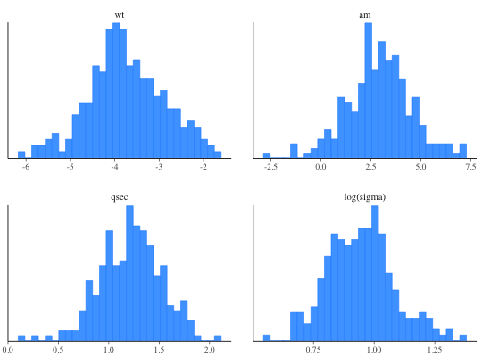

Bayesian regularized linear models via Stan
Bayesian inference for linear modeling with regularizing priors on the
model parameters that are driven by prior beliefs about \(R^2\), the
proportion of variance in the outcome attributable to the predictors. See
priors for an explanation of this critical point.
stan_glm with family="gaussian" also estimates a
linear model with normally-distributed errors and allows for various other
priors on the coefficients.
stan_aov(formula, data, projections = FALSE, contrasts = NULL, ..., prior = R2(stop("'location' must be specified")), prior_PD = FALSE, algorithm = c("sampling", "meanfield", "fullrank"), adapt_delta = NULL) stan_lm(formula, data, subset, weights, na.action, model = TRUE, x = FALSE, y = FALSE, singular.ok = TRUE, contrasts = NULL, offset, ..., prior = R2(stop("'location' must be specified")), prior_intercept = NULL, prior_PD = FALSE, algorithm = c("sampling", "meanfield", "fullrank"), adapt_delta = NULL) stan_lm.wfit(x, y, w, offset = NULL, singular.ok = TRUE, ..., prior = R2(stop("'location' must be specified")), prior_intercept = NULL, prior_PD = FALSE, algorithm = c("sampling", "meanfield", "fullrank"), adapt_delta = NULL) stan_lm.fit(x, y, offset = NULL, singular.ok = TRUE, ..., prior = R2(stop("'location' must be specified")), prior_intercept = NULL, prior_PD = FALSE, algorithm = c("sampling", "meanfield", "fullrank"), adapt_delta = NULL)
Arguments
| formula, data, subset | Same as |
|---|---|
| projections | For |
| ... | Further arguments passed to the function in the rstan
package ( |
| prior | Must be a call to |
| prior_PD | A logical scalar (defaulting to |
| algorithm | A string (possibly abbreviated) indicating the
estimation approach to use. Can be |
| adapt_delta | Only relevant if |
| na.action, singular.ok, contrasts | Same as |
| model, offset, weights | Same as |
| x, y | In |
| prior_intercept | Either |
| w | Same as in |
Value
A stanreg object is returned
for stan_lm, stan_aov.
A stanfit object (or a slightly modified
stanfit object) is returned if stan_lm.fit or stan_lm.wfit is called directly.
Details
The stan_lm function is similar in syntax to the
lm function but rather than choosing the parameters to
minimize the sum of squared residuals, samples from the posterior
distribution are drawn using MCMC (if algorithm is
"sampling"). The stan_lm function has a formula-based
interface and would usually be called by users but the stan_lm.fit
and stan_lm.wfit functions might be called by other functions that
parse the data themselves and are analagous to lm.fit
and lm.wfit respectively.
In addition to estimating sigma --- the standard deviation of the
normally-distributed errors --- this model estimates a positive parameter
called log-fit_ratio. If it is positive, the marginal posterior
variance of the outcome will exceed the sample variance of the outcome
by a multiplicative factor equal to the square of fit_ratio.
Conversely if log-fit_ratio is negative, then the model underfits.
Given the regularizing nature of the priors, a slight underfit is good.
Finally, the posterior predictive distribution is generated with the
predictors fixed at their sample means. This quantity is useful for
checking convergence because it is reasonably normally distributed
and a function of all the parameters in the model.
The stan_aov function is similar to aov and
has a somewhat customized print method but basically just
calls stan_lm with dummy variables to do a Bayesian analysis of
variance.
References
Lewandowski, D., Kurowicka D., and Joe, H. (2009). Generating random correlation matrices based on vines and extended onion method. Journal of Multivariate Analysis. 100(9), 1989--2001.
See also
The vignettes for stan_lm and stan_aov, which have more
thorough descriptions and examples.
Also see stan_glm, which --- if family =
gaussian(link="identity") --- also estimates a linear model with
normally-distributed errors but specifies different priors.
Examples
op <- options(contrasts = c("contr.helmert", "contr.poly")) stan_aov(yield ~ block + N*P*K, data = npk, prior = R2(0.5), seed = 12345)#> #> SAMPLING FOR MODEL 'lm' NOW (CHAIN 1). #> #> Chain 1, Iteration: 1 / 2000 [ 0%] (Warmup) #> Chain 1, Iteration: 200 / 2000 [ 10%] (Warmup) #> Chain 1, Iteration: 400 / 2000 [ 20%] (Warmup) #> Chain 1, Iteration: 600 / 2000 [ 30%] (Warmup) #> Chain 1, Iteration: 800 / 2000 [ 40%] (Warmup) #> Chain 1, Iteration: 1000 / 2000 [ 50%] (Warmup) #> Chain 1, Iteration: 1001 / 2000 [ 50%] (Sampling) #> Chain 1, Iteration: 1200 / 2000 [ 60%] (Sampling) #> Chain 1, Iteration: 1400 / 2000 [ 70%] (Sampling) #> Chain 1, Iteration: 1600 / 2000 [ 80%] (Sampling) #> Chain 1, Iteration: 1800 / 2000 [ 90%] (Sampling) #> Chain 1, Iteration: 2000 / 2000 [100%] (Sampling) #> Elapsed Time: 0.146088 seconds (Warm-up) #> 0.122001 seconds (Sampling) #> 0.268089 seconds (Total) #> #> #> SAMPLING FOR MODEL 'lm' NOW (CHAIN 2). #> #> Chain 2, Iteration: 1 / 2000 [ 0%] (Warmup) #> Chain 2, Iteration: 200 / 2000 [ 10%] (Warmup) #> Chain 2, Iteration: 400 / 2000 [ 20%] (Warmup) #> Chain 2, Iteration: 600 / 2000 [ 30%] (Warmup) #> Chain 2, Iteration: 800 / 2000 [ 40%] (Warmup) #> Chain 2, Iteration: 1000 / 2000 [ 50%] (Warmup) #> Chain 2, Iteration: 1001 / 2000 [ 50%] (Sampling) #> Chain 2, Iteration: 1200 / 2000 [ 60%] (Sampling) #> Chain 2, Iteration: 1400 / 2000 [ 70%] (Sampling) #> Chain 2, Iteration: 1600 / 2000 [ 80%] (Sampling) #> Chain 2, Iteration: 1800 / 2000 [ 90%] (Sampling) #> Chain 2, Iteration: 2000 / 2000 [100%] (Sampling) #> Elapsed Time: 0.154624 seconds (Warm-up) #> 0.158354 seconds (Sampling) #> 0.312978 seconds (Total) #> #> #> SAMPLING FOR MODEL 'lm' NOW (CHAIN 3). #> #> Chain 3, Iteration: 1 / 2000 [ 0%] (Warmup) #> Chain 3, Iteration: 200 / 2000 [ 10%] (Warmup) #> Chain 3, Iteration: 400 / 2000 [ 20%] (Warmup) #> Chain 3, Iteration: 600 / 2000 [ 30%] (Warmup) #> Chain 3, Iteration: 800 / 2000 [ 40%] (Warmup) #> Chain 3, Iteration: 1000 / 2000 [ 50%] (Warmup) #> Chain 3, Iteration: 1001 / 2000 [ 50%] (Sampling) #> Chain 3, Iteration: 1200 / 2000 [ 60%] (Sampling) #> Chain 3, Iteration: 1400 / 2000 [ 70%] (Sampling) #> Chain 3, Iteration: 1600 / 2000 [ 80%] (Sampling) #> Chain 3, Iteration: 1800 / 2000 [ 90%] (Sampling) #> Chain 3, Iteration: 2000 / 2000 [100%] (Sampling) #> Elapsed Time: 0.17428 seconds (Warm-up) #> 0.148584 seconds (Sampling) #> 0.322864 seconds (Total) #> #> #> SAMPLING FOR MODEL 'lm' NOW (CHAIN 4). #> #> Chain 4, Iteration: 1 / 2000 [ 0%] (Warmup) #> Chain 4, Iteration: 200 / 2000 [ 10%] (Warmup) #> Chain 4, Iteration: 400 / 2000 [ 20%] (Warmup) #> Chain 4, Iteration: 600 / 2000 [ 30%] (Warmup) #> Chain 4, Iteration: 800 / 2000 [ 40%] (Warmup) #> Chain 4, Iteration: 1000 / 2000 [ 50%] (Warmup) #> Chain 4, Iteration: 1001 / 2000 [ 50%] (Sampling) #> Chain 4, Iteration: 1200 / 2000 [ 60%] (Sampling) #> Chain 4, Iteration: 1400 / 2000 [ 70%] (Sampling) #> Chain 4, Iteration: 1600 / 2000 [ 80%] (Sampling) #> Chain 4, Iteration: 1800 / 2000 [ 90%] (Sampling) #> Chain 4, Iteration: 2000 / 2000 [100%] (Sampling) #> Elapsed Time: 0.1685 seconds (Warm-up) #> 0.204973 seconds (Sampling) #> 0.373473 seconds (Total) #>#> stan_aov #> family: gaussian [identity] #> formula: yield ~ block + N * P * K #> num. obs: 24 #> ------ #> #> Estimates: #> Median MAD_SD #> (Intercept) 54.9 0.9 #> block1 1.2 1.3 #> block2 1.2 0.7 #> block3 -1.3 0.5 #> block4 -0.7 0.4 #> block5 0.2 0.3 #> N1 1.9 0.8 #> P1 -0.4 0.7 #> K1 -1.4 0.7 #> N1:P1 -0.7 0.7 #> N1:K1 -0.8 0.7 #> P1:K1 0.1 0.7 #> sigma 4.2 0.7 #> log-fit_ratio 0.0 0.1 #> R2 0.5 0.1 #> #> Sample avg. posterior predictive #> distribution of y (X = xbar): #> Median MAD_SD #> mean_PPD 54.9 1.2 #> #> ANOVA-like table: #> Median MAD_SD #> Mean Sq block 43.4 20.9 #> Mean Sq N 47.7 27.8 #> Mean Sq P 14.3 11.7 #> Mean Sq K 29.8 20.5 #> Mean Sq N:P 12.0 16.0 #> Mean Sq N:K 16.6 21.5 #> Mean Sq P:K 5.6 7.7 #> #> ------ #> For info on the priors used see help('prior_summary.stanreg').options(op) (fit <- stan_lm(mpg ~ wt + qsec + am, data = mtcars, prior = R2(0.75), # the next line is only to make the example go fast enough chains = 1, iter = 500, seed = 12345))#> #> SAMPLING FOR MODEL 'lm' NOW (CHAIN 1). #> #> Chain 1, Iteration: 1 / 500 [ 0%] (Warmup) #> Chain 1, Iteration: 50 / 500 [ 10%] (Warmup) #> Chain 1, Iteration: 100 / 500 [ 20%] (Warmup) #> Chain 1, Iteration: 150 / 500 [ 30%] (Warmup) #> Chain 1, Iteration: 200 / 500 [ 40%] (Warmup) #> Chain 1, Iteration: 250 / 500 [ 50%] (Warmup) #> Chain 1, Iteration: 251 / 500 [ 50%] (Sampling) #> Chain 1, Iteration: 300 / 500 [ 60%] (Sampling) #> Chain 1, Iteration: 350 / 500 [ 70%] (Sampling) #> Chain 1, Iteration: 400 / 500 [ 80%] (Sampling) #> Chain 1, Iteration: 450 / 500 [ 90%] (Sampling) #> Chain 1, Iteration: 500 / 500 [100%] (Sampling) #> Elapsed Time: 0.71225 seconds (Warm-up) #> 0.549696 seconds (Sampling) #> 1.26195 seconds (Total) #>#> stan_lm #> family: gaussian [identity] #> formula: mpg ~ wt + qsec + am #> num. obs: 32 #> ------ #> #> Estimates: #> Median MAD_SD #> (Intercept) 8.9 7.7 #> wt -3.8 0.8 #> qsec 1.2 0.3 #> am 2.9 1.4 #> sigma 2.6 0.4 #> log-fit_ratio 0.0 0.1 #> R2 0.8 0.0 #> #> Sample avg. posterior predictive #> distribution of y (X = xbar): #> Median MAD_SD #> mean_PPD 20.1 0.7 #> #> ------ #> For info on the priors used see help('prior_summary.stanreg').plot(fit, prob = 0.8)plot(fit, "hist", pars = c("wt", "am", "qsec", "sigma"), transformations = list(sigma = "log"))#>